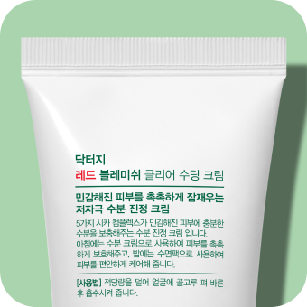

@@include('../../html/include/common/head.html')
@@include('../../html/include/common/header.html')
1:1 성분분석
Dr.G Cosmetic Analysis
제품 업로드/검색
제품명 확인
성분 분석
제품 업로드를 시작합니다.

제품 사진
을 분석하고 있습니다.
@@include('../../html/include/common/footer.html')